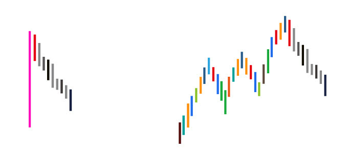

(2007-09-05 23:24:01)
对不起，回家晚了，现在才把课程写好贴上来。
梦话不能连续说，现在回到技术上来。对一些概念进行再分辨，因为有些概念太基础，如果搞不清楚，后面永远就一个字：乱。为了不乱，希望是最后一次再把前面最基础的概念分辨一下。
先用缺口的例子说明基于严格分类基础上正确预测的思维方法。【韶山映山红】思维方法。正确预测的思维方法。基于严格分类基础上正确预测。】
任何预测，都必须基于严格分类的基础上，这是一个最基本的思维，否则，整天陶醉在纯概率的游戏中，只能是无聊当有趣。【韶山映山红】最严格的分类就是完全分类，全都分，也没有重叠。围追堵截，见招拆招。所有的概率都在算计中。】
例如缺口，用向上的为例子。
首先，要给缺口一个明确的定义，这定义是有利于分类的，只有明确的定义才有明确的完全分类。【韶山映山红】定义就是拿来分类的。建立自己，区别其他。】
何谓缺口，就是在该单位K线图上两相邻的K线间出现没有成交的区间。【韶山映山红】缺口定义：某单位Ｋ线图，两相邻的K线之间，没有Ｋ线的空白区间。】
例如，在上海指数日线单位的K线图里，1994年的7月29日与8月1日，就出现[339,377]这个区间没有成交。那就说，[339,377]是一缺口。
而缺口的回补，就是在缺口出现后，该缺口区间最终全部再次出现成交的过程。【韶山映山红】缺口回补定义：某单位Ｋ线图，缺口的空白区间被新的Ｋ线全部覆盖。】
这个过程，可能在下一K线就出现，也可能永远不再出现。【韶山映山红】缺口回补定义的补充：缺口之后的任一Ｋ线覆盖缺口的空白区间都算回补。没有时间约束。】
例如[339,377]这一缺口，虽然不敢说永远不再回补，但到股市被消灭前，大概也没什么机会回补了。【韶山映山红】缺口并不必然回补。】
像本ID之类有幸经历这一天的人，有福了。本ID还记得，本ID当时在1994年7月29日最大量买入的股票，深圳是老星源，【韶山映山红】老星源：000005深星源Ａ，1997-01-01变更为世纪星源。】上海是大飞乐。【韶山映山红】大飞乐：600654飞乐股份。老八股之一。1984年曾发起组建飞乐音响股份有限公司。因此，习惯上将飞乐股份称为“大飞乐”，而将600651飞乐音响称为“小飞乐”。飞乐股份于2015.04.02变更为中安消。】
【韶山映山红】000005世纪星源。】
【韶山映山红】600654飞乐股份。2015-04-02变更为中安消。】
根据缺口的是否回补，【韶山映山红】按照回补情况进行完全分类。实际上是两个维度：是否回补，是否因为回补动作而发生转折。】就构成了对走势行情力度的一个分类。【韶山映山红】走势行情力度不涉及方向。】
一、不回补，这显然是强势的；【韶山映山红】强势让缺口摆在那里晒给所有人看。形成缺口的那个走势强势。】
二、回补后继续新高或新低，这是平势的；【韶山映山红】有缺口，又被抹平了，假装什么也没发生过，形成缺口的那个走势平势。 这种缺口形成的机理是什么？★可以做个专题，以后研究。】
三、回补后不能新高、新低，因而出现原来走势的转折，这是弱势的。【韶山映山红】有缺口，又被抹平了，但是抹平的动作太大，船翻了，形成缺口的那个走势弱势。】
【韶山映山红】这里的完全分类也可以理解为两个递进的层次。第一层次完全分类：不回补、回补。第二层次完全分类：回补后继续缺口之前的走势、回补后不继续缺口之前的走势而是继续回补方向的走势。】
【韶山映山红】缺口是一种结果，用回补情况考察走势的延续能力。前面时间走势力度大而形成的缺口，与后面走势力度形成比较。可以类比中枢分析，前后两段走势的力度对比。不回补的相当于单边走势的趋势，回补再继续原来走势创新高新低的相当于趋势+盘整+趋势，回补之后转折的相当于趋势+盘整+反趋势。】
一般来说，突破性缺口极少回补，【韶山映山红】突破性缺口，突破震荡区间形成的缺口。“从最强势的角度，这缺口在今后三天的整理中能不破，就构成所谓的突破性缺口，”“这不是绝对的，是一个大统计概念。一般有缺口后，三天内回补，不回补，就基本是突破性缺口，如果从技术上解释，其实也很简单，因为5日上三天后一定在缺口上，如果不有效跌破5日线，当然就不会去补缺口，而5日线有上推的力量，自然就会继续走势，直到跌破5日线形成较大调整才会有补缺口的机会，当然，如果走得比较远，就要更大级别的调整才有机会去补缺口了。” 突破性缺口的回补意味着突破力量不足，或者还没有准备好。 突破性缺口极少回补。也就是说，不论是否回补，都不影响突破性缺口的性质。】
而中继性缺口，也就是趋势延续中的缺口，回补的几率对半，但都一定继续新高或新低，也就是至少是平势的。【韶山映山红】中继性缺口，趋势延续中的缺口。趋势延续中的缺口，是战术层面的，多空双方都不会拼命，所以回补的几率对半。】
而一旦缺口回补后不再新高、新低，那么就意味着原来的趋势发生逆转，这是衰竭性缺口的特征，【韶山映山红】也许是原走势的力量衰竭了，也可能是战败了。“大盘在进入调整前有极大可能先制造一个多头陷阱，大盘在1923-1925留下突破缺口，1972到1977留下中继缺口，如果是多头陷阱，一旦出现衰竭性缺口，就是警报拉响。”“缺口不补，表示强势。特别是突破性的缺口，或岛型反转的缺口，是不补的。唯一肯定要补的缺口，就是盘整中的，已经上涨最后的衰竭性缺口。”】一旦出现这种情况，就一定至少出现较大级别的调整，这级别至少大于缺口时所延续的趋势的级别。也就是说，一个日线级别趋势的衰竭性缺口，至少制造一个周线级别的调整。而一个5分钟级别的衰竭性缺口，至少制造一个30分钟级别的调整。【韶山映山红】缺口总归是强势的表现，和衰竭本应该是对立的。形成缺口还要衰竭，或者衰竭了还要形成缺口，意味着市场分力有比较激烈的分歧，需要大级别盘整去消磨就可以理解了。】
【韶山映山红】在笔线段初始化的前提下，缺口或者单独成笔，或者单独成段。那么，在递归的级别中，哪来的该级别缺口？★★可以做个专题，以后研究。】日K线有日K线的缺口，周K线有周K线的缺口。先看缺口，再看包含缺口的走势级别。缺口自身被划分的级别大小，不影响所在走势的级别。】
注意，这里的级别和缺口所在的K线图无关，只和本ID理论中的走势类型级别有关。【韶山映山红】包含缺口的走势类型的级别。】
不同周期K线图和走势的级别，就如同不同倍度数显微镜和显微镜所观察的物体，这个比喻反复说了，不能再混淆了。【韶山映山红】不同周期K线图如同不同倍度数显微镜。走势的级别如同显微镜所观察的物体。】
显然，日K线图有缺口，在日线以下的任何周期的K线图都会相应有缺口，而回补日线的缺口，不一定能回补日线以下周期K线图上的缺口。【韶山映山红】回补日K线缺口以后，日K线没有缺口，日K线以下周期K线图上不一定没有缺口。问题是，这个现象意味着什么？有什么分析价值？可以做个专题，以后研究。★】
另外，在盘整走势中的缺口，与在趋势中的缺口性质不同，属于普通缺口，这种缺口，一般都回补，而且没有太大的分析意义，唯一的意义，就是在中枢震荡中有一个目标，就是回拉的过程中，几乎肯定能至少拉回补掉缺口的位置。【韶山映山红】盘整所在级别是没有缺口的，所谓盘整走势中的缺口就是次级别走势的缺口。所以大概率回补就是重要意义。】
缺口说完了，就再说说，分型、笔、线段的问题。
分型就不用再说了，按定义，只要把包含关系搞清楚，相信连孔男人都应该能描红一番。如果没有包含关系，3个K线就可以决定一个分型，但注意，任何相邻的分型之间必须满足结合律，也就是，不能有些K线分属不同的分型，这样是不允许的。【韶山映山红】分型的结合律表示分型是按照定义拼凑出来的，并不要求K线是顺势的，比如顶分型的右元素不一定是上升K线的，完全可以是下降K线的。分型结合律要受到的约束就是不能有些K线分属不同的分型，因为结合是同时存在的形态，不能有先后顺序。任何相邻的分型之间必须满足结合律，否则其中一个就不被视为分型。】
一般来说，对不熟悉的人，首先应该按定义，把分析的图中的分型按照包含关系以及结合律的最基本处理后给标记好，顶分型可以用向下的箭头、底分型可以用向上的箭头，这样就一目了然了。【韶山映山红】包含处理，独立分型。这一步只管分型的标注，不管分型之间的独立K线。】
有了上面这基础工作，那这个图就可以看成只有这些分型，分型之间的K线都可以暂时不用管。下面的工作，就是确定笔了。
笔，必须是一顶一底，而且顶和底之间至少有一个K线不属于顶分型与底分型。
当然，还有一个最显然的，就是在同一笔中，顶分型中最高那K线的区间至少要有一部分高于底分型中最低那K线的区间，如果这条都不满足，也就是顶都在低的范围内或顶比底还低，这显然是不可接受的。【韶山映山红】“顶分型中最高那K线的区间”、“底分型中最低那K线的区间”，这两个区间，一般理解为单个K线的区间，而不是整个顶分型或底分型的区间。所以就带来了争议。从后面的内容看，顶在底中、底在顶中的问题，是说的整个分型的区间。★有可能是表达的问题，就像趋势a+A+b+B+c的c有没有B的第三类买卖点一样，缠师认为我们应该能看懂，不知道我们不去细想，一定要看见文字才能知道。】
因此，在确定笔的过程中，必须要满足上面的条件，这样可以唯一确定出笔的划分。
这个划分的唯一性很容易证明，假设有两个都满足条件的划分，这两个划分要有所不同，必然是两个划分从第N-1笔以前都是相同的，从第N笔开始出现第一个不同，这个的N可以等于1，这样就是从一开始就不同。那么第N-1笔结束的位置的分型，显然对于两个划分的性质是一样的，都是顶或底。
对于是顶的情况，那么第N笔，其底对于两个划分必然对应不同的底分型，否则这笔对两个划分就是相同的，这显然矛盾。由于分型的划分是唯一的，因此，这两种不同的划分里在第N笔对应的底分型，在顺序上必然有前后高低之分，而且在这两个底之间不可能还存在一个顶，否则这里就不是一笔了。
如果前面的底高于后面的底，那么前面的划分显然是错误的，因为按这种划分，该笔是没有完成的，一个底不经过一个顶后就有一个更低的底，这是最典型的笔没完成的情况。
如果前面的底不低于后面的底，那么如果再下面一个顶分型出现前，如果有一个底分型低于前面的底，那么，这两种划分都是不正确的，所划分的笔都是没完成的；
如下面一个顶分型出现前，没有一个底分型低于前面的底，那么下面一个顶分型，必然高于前面的底，因此，前面的底和这个顶分型就是新的N+1笔，因此，第N笔和第N+1笔就有了唯一的划分，这个第N笔开始有不同划分相矛盾。【韶山映山红】两个相等的底分型，根据先后顺序保留前面的底，舍弃后面的底。】
关于第N-1笔结束的位置的分型是底的情况，可以类似去证明。
综上所述，显然，笔的划分是唯一的。
从上面笔划分的唯一性证明中，其实也知道如何去划分笔的步骤：
一、确定所有符合标准的分型。【韶山映山红】标准就是非包含处理后，符合结合律的独立分型，分型之间有独立K线。】
二、如果前后两分型是同一性质的，对于顶，前面的低于后面的，只保留后面的，前面那个可以X掉；对于底，前面的高于后面的，只保留后面的，前面那个可以X掉。【韶山映山红】把笔的延伸问题都处理好。】不满足上面情况的，例如相等的，都可以先保留。【韶山映山红】“不满足上面情况的，”包括顶的前高后低和相等、底的前低后高和相等，所以说“例如相等的”。】
三、经过步骤二的处理后，余下的分型，如果相邻的是顶和底，那么这就可以划为一笔。【韶山映山红】这里直接“可以划为一笔”，也就是说，第一步确定所有符合标准的分型的时候，已经处理了包含问题、结合律问题和独立K线问题。】如果相邻的性质一样，那么必然有前顶不低于后顶，前底不高于后底，而在连续的顶后，必须会出现新的底，把这连续的顶中最先一个，和这新出现的底连在一起，就是新的一笔，而中间的那些顶，都X掉；在连续的底后，必须会出现新的顶，把这连续的底中最先一个，和这新出现的顶连在一起，就是新的一笔，而中间的那些底，都X掉。【韶山映山红】这里说的“最先一个”也同时解决了相等的问题。等高的顶，或者等低的底，都选择最先一个，X掉后面的。】
【韶山映山红】第一步准备符合标准的分型，第二步解决前面的延伸问题，第三步解决后面的相连问题。】
显然，经过上面的三个步骤，所有的笔都可以唯一地划分出来。
有了笔以后，就是线段了。线段划分的最基本原则，就是线段必须至少有三笔，这是十分显然的，否则，一笔都能构成线段，那笔和线段又有什么区别？【韶山映山红】不允许单笔成段。完全分类首先要有清晰的边界。】
至于两笔为什么不能构成线段，这理由更简单，因为两笔，那么线段的两段的分型的性质肯定是一样的，和笔一样，一个完整线段的两段的分型不可能是同性质的。也就是说，和笔一样，线段也不可能从一个顶开始结束于一个顶，或者从一个底开始结束于一个底。由此可见，线段中包含笔的数目，都是单数的。
而且，线段开始的那三笔，必须有重合，开始三笔没有重合的，是构不成线段的。【韶山映山红】由于线段的特征序列是第二笔，所以第一笔和第三笔注定重合，没有不重合的可能。】
另外，线段必须被线段所破坏才能确定其完成。【韶山映山红】所谓线段被线段所破坏就是：１，确定前线段完成。２，后线段这时候成立。】
对于线段划分的第一种情况，
如果第一笔出现笔破坏后，接着的一笔就创新高，而且再后一笔，根本就不触及笔破坏那一笔，那么，这时候，显然构成不了线段对线段的破坏，因为后面这这三笔没有重合，不可能构成一线段。【韶山映山红】笔破坏后又新高，意味着原线段已经向上延伸，即使“再后一笔”触及“笔破坏那一笔”，三笔有重叠，也无济于事。】
而这，用第一种情况的判断法就更明确了，上面这种情况根本不可能形成特征序列的分型，当然就不可能是线段的完成。【韶山映山红】形成特征序列的分型，才有可能是线段的完成。】
再者，线段被线段破坏，必须不能是被同一性质的线段所破坏，也就是从向上一笔开始的线段不可能被向上一笔的线段所有破坏，必然是被从向下一笔开始的线段所破坏。
线段的第二种情况，其实就包含这种情况。【韶山映山红】包含这种情况，是指哪种情况？“线段被线段破坏，必须不能是被同一性质的线段所破坏，”。第二种情况，有笔破坏的，有没笔破坏的。这种情况是指最终也没有笔破坏的，就无法自证，那就后线段破坏前线段，线段被线段破坏，后线段和前线段就不能是同一性质的线段，也就证明了前线段是一个单独的线段。】
也就是，按第一种情况，线段A没有被接着的线段B破坏，但接着的线段C破坏了线段B，因此，线段B是完成的，当然线段A也应该是完成的。注意，这里的线段A、B、C只是用结合律的原则先划分，括弧里面满足线段的基本性质，在这破坏关系没被确认之前，这只是一个假设的称呼。【韶山映山红】线段A、B、C是用结合律的原则、按照线段定义做的划分假设，也是一种多义性划分，是否属实就要做证明。线段C破坏线段B，因此线段B是完成的，这个说得通。然后说“当然线段A也应该是完成的”，这个“当然”的逻辑是什么？★可以做个专题，以后研究。】
【韶山映山红】第二种情况，B还没有破坏A，说的是还没有笔破坏，这时候用C破坏B来证明B的完成，而不是证明B对A的破坏。也就是说，并不存在B对A的破坏，只是把这种情况定义为破坏。】
【韶山映山红】线段A、B、C是用结合律的原则做的划分假设，先要满足三笔成线的前提。】
各位肯定注意，在第二种情况下特别强调，第二特征序列，其实就是对应着线段C对线段B的破坏，不再分第一、二种情况了。【韶山映山红】第一特征序列的作用有两个：判断区分第一、二种情况；考察笔破坏的二次确认。第二特征序列其实就是对应着线段C对线段B的破坏。那么，也是同样的两个作用。也就是说，考察所有第二特征序列是否组成分型是错误的解读。即使缠师后期81课的规则调整也是违背这里说的原则的。】
【韶山映山红】不再分第一、二种情况，也就是说，如果是第二种情况，不用继续去考察线段D对线段C的破坏。换句话说，如果没有线段D对线段C的破坏，也不否定线段C对线段B的破坏。也就是说，线段C任意走出三段，在第二特征序列不包含，就确认线段C对线段B的破坏。也就是说，第二特征序列只要有一个分型就满足要求了。 剩下的问题就是包含处理问题。】
【韶山映山红】不再分第一、二种情况，也就是说，第二种情况下，线段C对线段B的破坏并没有去确认，如果最终线段C不成立，也就成了线段B的延续。】
这，其实是一个简化的方法。为什么？
如果我们坚持线段的最终破坏回补特征序列缺口情况，【韶山映山红】线段的最终破坏，还是回补特征序列缺口。也就是说，小转大的第二种情况并不是线段的最终破坏，而是一种非线段破坏的定义。】那么，如果线段C对线段B还是第二种情况，那么线段C的区间肯定就在线段A特征序列缺口与线段B特征序列缺口之间，如此类推，总会出现一个线段X，使得对应前面的线段是回补特征序列缺口，否则，这些线段的区间就会无限缩小，最后就会形成一个点，这显然是不可能的，学过极限的都应该能理解。【韶山映山红】即使一直是第二种情况，也最终会有笔破坏。】
所以，在一串的相对前一线段是第二种情况的线段串中，比如最终会出现第一种情况的破坏，这样倒推回来，必然有这一串假定线段间的连续破坏。【韶山映山红】第二种情况的破坏不能自证，用后线段破坏前线段的方法去倒推，最终还是要落实到某个第一种情况的破坏的自证。】
正因为这样，所以在第二种情况中的第二特征序列判断中，就不再分第一、二种情况了，这样是免得有一串线段串不断收敛后倒推回来的麻烦。【韶山映山红】省事的简略做法。会有当下判断的偏差，无非是线段的延伸，并不会带来真正的错误。】
这在数学上当然是绝对完美，但操作起来太麻烦，而且这种特殊的情况很少见，就更没必要了。【韶山映山红】区分第二种情况，跟随不断的收敛去做追踪判断，是绝对完美，但没有现实意义。只作为理论上的数学推导就可以了，实际的分析工作可以采用简略的方法。】
那么，为什么要区分第二种情况，因为是不希望在线段的层次上出现小级别转大级别这样不确定的情况，用第二种情况就能解决这个问题。【韶山映山红】线段划分的第二种情况，本质上是小转大的认定与处理，是递归函数划分规则的重要参考依据。线段破坏的定义是走势破坏，标志就是笔破坏。在小转大的情况下，可能最终也没有走势破坏，只是一个中继，所以就要增加一种破坏的定义：后线段破坏前线段，就定义前线段作为小转大的线段成立。后线段破坏前线段也是走势破坏，以此证明前线段是一个走势。】
有一种复杂的情况，在今天的80-83的划分中就出现了。【韶山映山红】复杂在于，第一笔最终也没有满足线段的3笔要求，只能以笔的身份参与线段组合，如何对待这个特殊身份的笔？★可以做个专题，以后研究。】
就是对80-81，出现了第一笔的笔破坏，然后接着是一个符合线段标准的走势A，【韶山映山红】符合线段标准：3笔构成，有第一笔开始的方向上的延伸。】但没有创新低，这样当然不能算是原线段的延续，【韶山映山红】走势A没有低于81点，还在向上笔的范围内，就不是80-81线段的延续。如果走势A创新低了，就算是原线段的延续。这句话描述的是，两个符合线段标准的走势，以一个中间笔连接，即使这两个线段都独立成段，互相还有重叠，如果有方向上的延伸，就“算是原线段的延续”。这个描述沿用到递归函数，就是，两个同级别趋势，以一个低级别走势连接，即使这两个趋势都独立存在，互相还有重叠，如果有方向上的延伸，就算是原趋势的延续。也就是缠师说的上涨+上涨还是上涨，下跌+下跌还是下跌。】但线段的破坏也不能算，为什么？因为没有符合要求的三笔。【韶山映山红】因为81开始的向上走势只有一笔，没有符合要求的三笔，不存在向上线段，也就没有向下线段的走势A对向上线段的破坏。从分型的角度看，走势A的反弹的高点依次下降，包含处理之后，没有81底分型的右边元素，始终不能形成底分型。】接着，一个反弹，也满足线段的要求，【韶山映山红】反弹满足线段至少三笔的要求，第一种情况满足线段的笔破坏要求。】然后就转头继续创新低。【韶山映山红】新低以后才有向下线段的延续可言。】
这里有一个细微的区别，如果这个反弹只是一笔，那么就没有破坏走势A，后面接着的新底，就意味着走势A依然延续，所以走势A就是原来80-81的延续。【韶山映山红】如果这个反弹只有一笔，满足线段的笔破坏要求，却不满足线段至少三笔的要求，反弹就不能成段，也就没有反弹对走势A的线段破坏，就算走势A继续向下延续。 这时候的线段规则还是以线段破坏为准，按照后期的规则，这里一笔反弹，只要没有被包含处理，就能够形成81的底分型，也就符合了线段划分规则的要求。当然，这个实际的走势，结构形态跟81点开始的笔破坏一样了，逐次下落的包含处理，使得向上笔对走势Ａ没有形成线段破坏，不同的是这回比81新低了。一笔反弹对后面几笔做包含处理之后，就不再新高，还是不能构成81的底分型，这是另外一回事。 这里就引出一个问题，从线段破坏的规则，演化成分型判断的规则，依据是什么？是否发生了演化偏差？★★★可以做个专题，以后研究。】
但现在的问题是，这个反弹把走势A给线段破坏了，因此，说走势A依然延续是显然不对的，所以后面的走势和走势A无关，【韶山映山红】反弹段把走势A给线段破坏了，打断了走势A的延续，后面继续向下的走势和走势A无关。但是走势A自己也只是一个假想的线段，并不是真正的线段，后面继续向下的走势和走势A无关，并不表示和80-81无关，那么，81-82成段的法理何在？★】因此，唯一合理的划分，就是把第一笔的笔破坏、走势A、一个反弹合成一个线段，这完全满足线段的定义，所以就有了81-82。【韶山映山红】这里说反弹段破坏了走势Ａ，“线段被线段破坏，必须不能是被同一性质的线段所破坏，”那么反弹段和走势Ａ不是同一性质的线段。但最终的划分，反弹段和走势Ａ又同属于一个线段，这样就让一些人反而混乱了。这里给人的感觉有些牵强，甚至让人觉得81点开始的笔破坏单独成段才合理。所以有各种单笔成段的说法。】
【韶山映山红】如果81点开始的笔是第二种情况，别的走势结构都一样，又怎么划分线段？按照后期的规则，81点开始的笔最高，无法形成第二特征序列的顶分型，也就无法构成向上线段。那么，同样的反弹段破坏了走势Ａ，又怎么看？★可以做个专题，以后研究。】
线段的划分，其实一点都不难，关键是要从定义出发。【韶山映山红】线段规则看上去很明确，但是各种解读依然分歧很多。如果讲道理，依据就是“从定义出发”。问题是，从哪个定义出发呢？★可以做个专题，以后研究。】
而且用线段划分的两种情况的规定，不难证明，线段的划分也是唯一的。【韶山映山红】怎么证明？★可以做个专题，以后研究。】
有什么问题，请继续问，把事情彻底搞明白，才是最重要的。
这些补课，会不时展开，但不可能堂堂如此，下一次就要讲新内容了，老问题如果积累到一定程度，会再补课的。
【韶山映山红】阿娇博客： 顶底分型的要求：当然，还有一个最显然的，就是在同一笔中，顶分型中最高那K线的区间至少要有一部分高于底分型中最低那K线的区间，如果这条都不满足，也就是顶都在低（底）的范围内或顶比底还低，这显然是不可接受的。】
【韶山映山红】ajiao99999： 根据缺口的是否回补，就构成了对走势行情力度的一个分类。一、不回补，这显然是强势的；二、回补后继续新高或新低，这是平势的；三、回补后不能新高、新低，因而出现原来走势的转折，这是弱势的。2011-1-6 17:06】
【韶山映山红】ajiao99999： 衰竭性缺口的特征，一旦出现这种情况，就一定至少出现较大级别的调整，这级别至少大于缺口时所延续的趋势的级别。也就是说，一个日线级别趋势的衰竭性缺口，至少制造一个周线级别的调整。而一个5分钟级别的衰竭性缺口，至少制造一个30分钟级别的调整。 2011-1-6 17:10】
【网文】背驰、笔、线段的角色能力
如果类比于人物角色，背驰、笔、线段各自有什么角色能力，在走势的各个阶段起什么作用，那一个人物在对应的阶段作用最大？
从一个卖出点开始，走势开始下行，在这个位置没有任何操作的意义，所以是没有人会在这里操作的，随着走势不断下行和发展，逐渐出现两个中枢，后一个中枢比前一个低，这时候形成了趋势了，因为有了两个中枢的分隔，不同走势段之间有了比较的分界点，有了比较的可能性，这时候就开始考虑买入的事情了。在这里是不可能考虑卖出的，只有在进入走势的未段才会考虑买入。
这时候走势发育得很完整了，其实真实的情况是，因为买入我们是可以选可以等的，其实是我们选择了这种发育的很完整的走势才会去操作，这也可以看作是一种后效性，不过这是由我们自己决定的。【韶山映山红】不是走势都要这样发展，而是我们选择了这种发育的很完整的走势才会去操作。】
所有缠论中元素这时都出现，线段，区间套，背驰段都出现，都可以利用了，在这个位置最要的角色自然是背驰和背驰段，因为背驰是定位买入点的最重要依据，背驰在这个位置的能力是最强大的，这是显而易见的。
好了，当一个买入点确认后，在一个底分型的第三条K线上，资金己经进入，这时候我们会面对什么局面？我们什么也没有！这时候走势刚开始进入中阴段，只有底分型，及其后出现的第一条K线，甚至如果底分型第三条是一条强K线的话，这时候还在底分型的第三条K线上。
在这里不要说背驰，中枢这样的物体都未出来。
那就先这样着吧，还能怎样，等它发育起来再算，看现在能有什么用的就先用着什么吧，很显然，第一个出现的要素是一个笔，从底分型第二根k线算起，只要有第五根独立K线出现，那第一个笔就有了出现的所有可能条件。
继续发展下去，第一笔完结后，就会出现第二笔，这时候多少可以有点心安了，至少可以对比第二笔的尽端会不会破买入点的底部，这有了第一个对比。

然后是第三笔，在第三笔的过程中，就有形成第一个线段的可能。
好了，在这里停一停，也就是说，在第一类买入点出现后到第一条线段出现前，除了笔，没有任何东西形成，没有背驰，没有中枢，没有笔，更没有区间套，只有笔。
那这就没有什么好说的，在这个位置，笔是主角。没了了笔，在这里什么事都做不了。笔是买入后第一个可以用的工具。没有了笔最直接的后果是买了拿不住，或者是买错了逃不了。因为要拿住，或逃掉，发生在买入点其后的三笔内，从底分型第二条K线开始数一共13条K线。
笔的这个功能简直是要命的，它是万物之初，所有之源。
接下来的事情就是同构性出现了，三笔过后，第一个线段出现，在线段上所有的伎俩都可以使用了，如线段内部的变化对比，这个第一条线段和下行走势段最后一个中枢的关系等等。
同时留意到，其实也仅此而已，背驰，区间套还是未能出现在这个地方出现，所有的技巧都是围着第一条线段在转。
然后就这样一直地发展下去，这个阶段是一段走势的生长过程，随着线段的增多，一个个元素先后被构造出来，但在很长的时间内还是不会见到背驰的，在这里笔的作用被线段替代了。
由此可见，在这一阶段，线段是王者，在第一个中枢出现之前，线段是最大的元素，在中枢出现后，线段最大元素的位置让给了中枢，但线段还是最大的主角，因为中枢总是死掉的静止的，只有线段不断地动提供各种实时的信息。
这里依然还是没有背驰的什么事，因为它还未出场。
继续，这一段上行发育得非常好，终于，见到区间套了，见到背驰段了，是要考虑卖出的时候了。可是在这里的背驰，和买入点那里的背驰，有一点不同，这一点不同甚至很巨大。
我们回到买入点那里去看一看。
因为缠论的定义下，背驰是有固定的格式的，在买入阶段，这一种走势几乎是冷眼都不会去看的：
因为这一种转折完全就不是缠论定义中的背驰，在买入的时候是可以有选择的，走势可以按这种方式转折，但我们可以选择不做呀，我们只做这种转折：
可是在买入之后，那就没得选了，我们面对的转折可以是这两种方式中的任何一种：

背驰只是把某种走势形态套一个名字上去，把这两种走势形态套同一个名字也是可以的，假如这两种走势都是背驰，这时候“背驰”的意义直接等于“转折”，因为的转折只有这两种形式。
这就是说，买入阶段的背驰和卖出阶段的背驰（转折）是不同的。【韶山映山红】买、卖，不同构。】
买入段的背驰是收敛性的，卖出段的背驰是生长性，买入段我们只选择唯一的那种转折形式，而卖入的时候转折不是我们能选的，我们要同时面对两种形式的转折。
终于卖出了，这样一个完整过程下来，各个人物角色的位置和能力就清晰了。
上文己经完了，不过还可以有一些东西说。
一个学习缠论的人应当是不会一下子就学会了所有的这些工具的，按着时间顺序走势有不同的阶段，最简单的划分是，“买入-->中阴前段的三笔-->中阴中后段的线段-->中阴结束-->前三条线段-->生长-->卖出”， 在前一个阶段没有解决之前，后一个阶段对这个操作者来说是没有意义的，当买入的问题都没有解决的，没有一个正确的买入，是不会有一个正确的中阴段的，也不会有正确的卖出，从上面的过程可以看到，每一个阶段会对应着最有效的一个或一套工具。
其实这里出现了一个死循环，以买入段为例：没有好的判断背驰能力，做不好买入段；不知道买入段，学不来好的背驰判断能力。
一口吃不下一个胖子，都是要用时间来金钱来磨，每一个阶段磨的对象还是不同的。要看到缠说的那些元素是无一可缺，现有的这个缠论己经是解决问题所需工具最小化的了。
发布于 2018-11-09
(2007-09-06 15:55:55)
这题目没错，就是建行引领大盘前行，建行发行的意义，在昨天已经说得很清楚了，而建行作为这次大规模回归的首家，其最终的表现，将对后面的回归者有极大的指标意义。【韶山映山红】前一天说的是：“而一线大盘，关键就看建行的发行价了，如果搞出一个比现在中行、工行差不多甚至还高的发行价格，那么这些一线大盘就谁都按不住了。这其实也是本ID为什么一手题材股、一手中字头，两手都要硬的原因。你想，如果中移动发30-50元，那么中国联通待在10元之下，他好意思？如果中石油也搞个20-30元的，中石头怎么好意思在20元之下。目前，这些大石头们最大的支持或动力，就是同类回归的价格，一旦建行出现一个高发行价，后面回来的想低都没门了。这样，各位就继续疯狂吧。” 601939建设银行，发行价格6.45元。2007.09.25上市，开盘价8.55元。】
因此，像尾盘出现中行等飞速拉起的情形，就一点都不奇怪了。
【韶山映山红】601988中国银行。】
不过有点必须明确，本ID昨天回答问题时说到中国联通的一些题材，并不是正式的东西，就当成梦话吧。本ID有联通，这里的人应该很多都知道，在春节前后，在这里还连续N天直播过联通上5元的活动。这是本ID要海枯石烂的股票，中移动在香港100元多，如果中移动的GSM业务都给了联通，本ID也不知道联通该多少钱，但联通搞GSM、移动搞大唐玩意、电信搞CDMA，并不是什么正式公告，只是一种还未被最后正式批准的可能方案，其实本ID在以前回答问题的时候也多次说过，但从来没在文章里说过，所以只能当梦话，相信者有毛病。至于整体上市、中移动回归，都是很明确的，只是迟早的事情，所以对联通的判断，要以此为准。
本ID其实不愿意回答个股问题，本ID告诉的股票都是本ID正买着的，当然，本ID建仓的过程可能很长，但本ID在这里第一次说的时间，肯定和本ID第一笔建仓的时间是同一日，甚至更早，这点是没问题的。
例如潍柴，5月15日写诗，也是本ID买的第一天，【韶山映山红】《偶见湘火炬广告牌，口占五绝。》(2007-05-15 15:14:19)】
【韶山映山红】000338潍柴动力。】
本ID把自己买的股票说出来，不存在推荐的问题，这就如同告诉各位，本ID中午吃了点什么一样。今天中午，本ID只喝了点果汁，就这样了。【韶山映山红】为什么冒出这一么句话？有隐喻还是有故事？有时间搜一下问答看看。★】
大盘没什么可说的，
补完缺口后创新高，
也就是说周一的缺口依然只是中继性质的，那游戏继续。【韶山映山红】这里说的是9月5日的83回补9月3日开盘的缺口。】
下面再次用明确的语言给出目前的操作守则：
一、一旦有致命的消息，手起刀落，让股票见鬼去。
二、没消息就是最好的消息，用尽一切手段疯狂去。
三、最懒的办法，看5日、5周线。
四、针对那三种技术形态的股票，分类操作。（以前用600636【韶山映山红】600636三爱富】、600737、000938为例子说过。）【韶山映山红】“个股方面，给各位一个技术面上的判断标准。现在的个股，日线上无非三种：一、突破530高位；二、没突破530高位但突破530后第一个反弹高位；三、530后第一个反弹高位还没突破。”】
五、目前位置，就不要抱什么长线打算了，长线打算是在长线买点去打算的。现在只是疯狂的游戏阶段，成功的唯一标准只有一个：把钱赚到袋子里又不被刀子伤着。【韶山映山红】长线打算是在长线买点去打算的。买入以后就不再考虑对应买入的级别，而是根据走势的破坏情况去打算。】
六、对于中长线投资者，只战略性持有等待中线卖点的出现，然后用部分仓位去进行降低成本或赚取筹码的操作。【韶山映山红】中长线投资者，等待中线卖点的出现，而不是中长线卖点，也就是说，大级别买，小级别卖。】
这六点里，对于短线来说，第一条是最重要的，第二条是最实际的。
今天有事要忙，不能回答问题了，对不起，先下，再见。
本课目录
教你炒股票77：一些概念的再分辨【网文】背驰、笔、线段的角色能力建行引领大盘前行